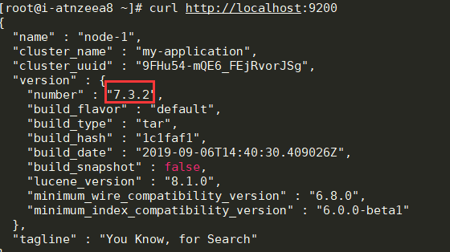
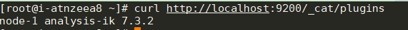
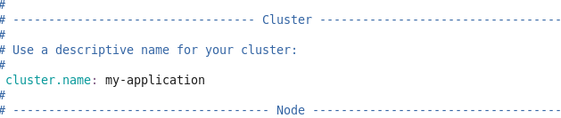
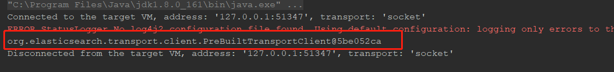

- AQS 万字图文全面解析.md.html
- Docker 镜像构建原理及源码分析.md.html
- ElasticSearch 小白从入门到精通.md.html
- JVM CPU Profiler技术原理及源码深度解析.md.html
- JVM 垃圾收集器.md.html
- JVM 面试的 30 个知识点.md.html
- Java IO 体系、线程模型大总结.md.html
- Java NIO浅析.md.html
- Java 面试题集锦（网络篇）.md.html
- Java-直接内存 DirectMemory 详解.md.html
- Java中9种常见的CMS GC问题分析与解决（上）.md.html
- Java中9种常见的CMS GC问题分析与解决（下）.md.html
- Java中的SPI.md.html
- Java中的ThreadLocal.md.html
- Java线程池实现原理及其在美团业务中的实践.md.html
- Java魔法类：Unsafe应用解析.md.html
- Kafka 源码阅读笔记.md.html
- Kafka、ActiveMQ、RabbitMQ、RocketMQ 区别以及高可用原理.md.html
- MySQL · 引擎特性 · InnoDB Buffer Pool.md.html
- MySQL · 引擎特性 · InnoDB IO子系统.md.html
- MySQL · 引擎特性 · InnoDB 事务系统.md.html
- MySQL · 引擎特性 · InnoDB 同步机制.md.html
- MySQL · 引擎特性 · InnoDB 数据页解析.md.html
- MySQL · 引擎特性 · InnoDB崩溃恢复.md.html
- MySQL · 引擎特性 · 临时表那些事儿.md.html
- MySQL 主从复制 半同步复制.md.html
- MySQL 主从复制 基于GTID复制.md.html
- MySQL 主从复制.md.html
- MySQL 事务日志(redo log和undo log).md.html
- MySQL 亿级别数据迁移实战代码分享.md.html
- MySQL 从一条数据说起-InnoDB行存储数据结构.md.html
- MySQL 地基基础：事务和锁的面纱.md.html
- MySQL 地基基础：数据字典.md.html
- MySQL 地基基础：数据库字符集.md.html
- MySQL 性能优化：碎片整理.md.html
- MySQL 故障诊断：一个 ALTER TALBE 执行了很久，你慌不慌？.md.html
- MySQL 故障诊断：如何在日志中轻松定位大事务.md.html
- MySQL 故障诊断：教你快速定位加锁的 SQL.md.html
- MySQL 日志详解.md.html
- MySQL 的半同步是什么？.md.html
- MySQL中的事务和MVCC.md.html
- MySQL事务_事务隔离级别详解.md.html
- MySQL优化：优化 select count().md.html
- MySQL共享锁、排他锁、悲观锁、乐观锁.md.html
- MySQL的MVCC（多版本并发控制）.md.html
- QingStor 对象存储架构设计及最佳实践.md.html
- RocketMQ 面试题集锦.md.html
- SnowFlake 雪花算法生成分布式 ID.md.html
- Spring Boot 2.x 结合 k8s 实现分布式微服务架构.md.html
- Spring Boot 教程：如何开发一个 starter.md.html
- Spring MVC 原理.md.html
- Spring MyBatis和Spring整合的奥秘.md.html
- Spring 帮助你更好的理解Spring循环依赖.md.html
- Spring 循环依赖及解决方式.md.html
- Spring中眼花缭乱的BeanDefinition.md.html
- Vert.x 基础入门.md.html
- eBay 的 Elasticsearch 性能调优实践.md.html
- 不可不说的Java“锁”事.md.html
- 互联网并发限流实战.md.html
- 从ReentrantLock的实现看AQS的原理及应用.md.html
- 从SpringCloud开始，聊微服务架构.md.html
- 全面了解 JDK 线程池实现原理.md.html
- 分布式一致性理论与算法.md.html
- 分布式一致性算法 Raft.md.html
- 分布式唯一 ID 解析.md.html
- 分布式链路追踪：集群管理设计.md.html
- 动态代理种类及原理，你知道多少？.md.html
- 响应式架构与 RxJava 在有赞零售的实践.md.html
- 大数据算法——布隆过滤器.md.html
- 如何优雅地记录操作日志？.md.html
- 如何设计一个亿级消息量的 IM 系统.md.html
- 异步网络模型.md.html
- 当我们在讨论CQRS时，我们在讨论些神马？.md.html
- 彻底理解 MySQL 的索引机制.md.html
- 最全的 116 道 Redis 面试题解答.md.html
- 有赞权限系统(SAM).md.html
- 有赞零售中台建设方法的探索与实践.md.html
- 服务注册与发现原理剖析（Eureka、Zookeeper、Nacos）.md.html
- 深入浅出Cache.md.html
- 深入理解 MySQL 底层实现.md.html
- 漫画讲解 git rebase VS git merge.md.html
- 生成浏览器唯一稳定 ID 的探索.md.html
- 缓存 如何保证缓存与数据库的双写一致性？.md.html
- 网易严选怎么做全链路监控的？.md.html
- 美团万亿级 KV 存储架构与实践.md.html
- 美团点评Kubernetes集群管理实践.md.html
- 美团百亿规模API网关服务Shepherd的设计与实现.md.html
- 解读《阿里巴巴 Java 开发手册》背后的思考.md.html
- 认识 MySQL 和 Redis 的数据一致性问题.md.html
- 进阶：Dockerfile 高阶使用指南及镜像优化.md.html
- 铁总在用的高性能分布式缓存计算框架 Geode.md.html
- 阿里云PolarDB及其共享存储PolarFS技术实现分析（上）.md.html
- 阿里云PolarDB及其共享存储PolarFS技术实现分析（下）.md.html
- 面试最常被问的 Java 后端题.md.html
- 领域驱动设计在互联网业务开发中的实践.md.html
- 领域驱动设计的菱形对称架构.md.html
- 高效构建 Docker 镜像的最佳实践.md.html
- 捐赠
ElasticSearch 小白从入门到精通
什么是 ElasticSearch
ElasticSearch 简称为 ES，网址为：
ES 是一个分布式的开源搜索和分析引擎，适用于文本、数字、地理空间、结构化数据、非结构化数据等数据的搜索。ES 是在 Apache Lucene 的基础上完成开发。由 Elastic 于 2010 年发布。ES 通过其简单的 REST 风格的 API、分布式特性、速度和可扩容闻名世界。是 Elastic Stack 的核心组件。Elastic Stack 是一套用于数据采集、扩充、保存、分析、可视化的开源工具。Elastic Stack 称之为 ELK。目前 ELK 包含一系列丰富的轻量数据采集代理，这些代理被称之为 Beats。
ES 的用途
主要有以下的用途：
- 应用程序搜索
- 网站搜索
- 企业搜索
- 日志处理
- 基础设施指标和容器监测
- 应用程序性能监测
- 地理空间数据分析和可视化
- 安全分析
- 业务分析
工作原理
从多个来源输入到 ES 中，数据在 ES 中进行索引和解析，标准化并充实这些数据。这些数据在 ES 中索引完成之后，用户就可以针对他们的数据进行复杂的查询，并使用聚合来检索这些数据，在 Kibana 中，用户可以创建数据可视化面板，并对 ELK 进行管理。
索引
ES 索引是指相互关联的文档集合。ES 是会以 JSON 文档的形式保存数据，每个文档都会在一组键值对中建立联系。
ES 使用的是一种倒排序索引的数据结构。这个结构可以允许十分快速的进行全文本的搜索。
在索引的过程中，ES 会保存文档并构建倒排序索引，这样用户就可以实时的对文档数据进行搜索。索引是在添加过程中就启动的。
Logstash
Logstash 是 ELK 的核心菜品，可以对数据进行聚合和处理。并将数据发送到 ES 中。Logstash 是一个开源的服务器端数据处理管道。
Kibana
Kibana 是一款 ES 的数据可视化和管理工具，可以提供直方图，线形图，饼状图，地图。Kibana 还包含 Canvas 和 Elastic Maps 等应用程序。Canvas 可以基于用户创建动态信息。Elastic Maps 可以对空间数据进行可视化处理。
为什么要使用 ES
- ES 很快：ES 是在 Lucene 基础上构建，所以全文本搜索相当的出色。ES 还是一个实时搜索平台。文档索引操作到文档变为可搜索之间速度很快。
- ES 具有分布式的特征：ES 中保存的文档分布在不同的容器中，这些容器为分片，可以对分片进行复制并形成冗余副本。ES 可以扩充到数百台，并处理 PB 级别的数据。
- ES 包含一系列广泛的功能：ES 拥有大量的内置功能，方便用户管理数据。
- ES 简化了数据采集，可视化报告的过程：通过与 Beats 和 Logstash 集成，用户可以在 ES 中索引数据并处理数据，
ES 搭建
安装镜像：
docker pull docker.elastic.co/elasticsearch/elasticsearch:7.3.2
启动容器：
docker run -d --name es -p 9200:9200 -p 9300:9300 -e "discovery.type=single-node" docker.elastic.co/elasticsearch/elasticsearch:7.3.2
修改配置：
#进入 docker 容器内部
docker exec -it es /bin/bash
#打开配置文件
vim config/elasticsearch.yml
### 加入跨域配置
http.cors.enabled: true
http.cors.allow-origin: "*"
进入容器，安装分词器：
docker exec -it es /bin/bash
./bin/elasticsearch-plugin install https://github.com/medcl/elasticsearch-analysis-ik/releases/download/v7.3.2/elasticsearch-analysis-ik-7.3.2.zip
重启 ES：
docker restart es
测试：

查看分词器是否安装上：

ES 查询
空查询
空查询将会返回一个索引库中所有文档：
curl -X GET "localhost:9200/_search?pretty" -H 'Content-Type: application/json' -d'
{}
'
在一个或者多个索引库或者所有的 _type 中查询：
GET /index_2014*/type1,type2/_search
{}
使用分页：
GET /_search
{
"from": 30,
"size": 10
}
查询表达式
只需要在查询上，将语句传递给 queue 参数：
GET /_search
{
"query": YOUR_QUERY_HERE
}
查询语句的结构
一个查询的典型结构：
{
QUERY_NAME: {
ARGUMENT: VALUE,
ARGUMENT: VALUE,...
}
}
针对某个字段：
{
QUERY_NAME: {
FIELD_NAME: {
ARGUMENT: VALUE,
ARGUMENT: VALUE,...
}
}
}
如果想要使用 match 查询 tewwt 字段中包含 elasticsesh 的内容。
curl -X GET "localhost:9200/_search?pretty" -H 'Content-Type: application/json' -d'
{
"query": {
"match": {
"tweet": "elasticsearch"
}
}
}
'
合并查询
分为叶子语句，被用于将查询字符串和字段进行对比，复合语句用于合并其他查询语句。
例如下面语句：找出信件正文包含 business opportunity 的星标邮件，或者在邮件正文包含 business opportunity 的非垃圾邮件：
{
"bool": {
"must": { "match": { "email": "business opportunity" }},
"should": [
{ "match": { "starred": true }},
{ "bool": {
"must": { "match": { "folder": "inbox" }},
"must_not": { "match": { "spam": true }}
}}
],
"minimum_should_match": 1
}
}
常用查询
match_all 查询
该查询匹配所有文档：
{ "match_all": {}}
match 查询
用于使用分词器进行查询：
{ "match": { "tweet": "About Search" }}
multi_match 查询
用于在多个字段上执行相同更多 match 查询：
{
"multi_match": {
"query": "full text search",
"fields": [ "title", "body" ]
}
}
range 查询
用于找出在指定区间内的数字或者时间：
{
"range": {
"age": {
"gte": 20,
"lt": 30
}
}
}
term 查询
用于进行精确匹配：
{ "term": { "age": 26 }}
{ "term": { "date": "2014-09-01" }}
{ "term": { "public": true }}
{ "term": { "tag": "full_text" }}
terms 查询
用于进行多值匹配：
{ "terms": { "tag": [ "search", "full_text", "nosql" ] }}
exists 查询和 missing 查询
用于查询在指定字段中有值或者无值的文档：
{
"exists": {
"field": "title"
}
}
ES 索引
创建一个索引
PUT /my_index
{
"settings": { ... any settings ... },
"mappings": {
"type_one": { ... any mappings ... },
"type_two": { ... any mappings ... },
...
}
}
此刻，ES 会自动创建一个索引。
删除一个索引
DELETE /my_index
索引设置
- number_of_shards：每个索引的主分片数
- number_of_replicas：每个主分片的副本数
创建只有 一个主分片，没有副本的小索引：
PUT /my_temp_index
{
"settings": {
"number_of_shards" : 1,
"number_of_replicas" : 0
}
}
配置分析器
standard 分析器是用于全文字段的默认分析器，包含以下部分：
- standard 分词器，通过单词边界分割输入的文本。
- standard 语汇单元过滤器，目的是整理分词器触发的语汇单元（但是目前什么都没做）。
- lowercase 语汇单元过滤器，转换所有的语汇单元为小写。
- stop 语汇单元过滤器，删除停用词—对搜索相关性影响不大的常用词，如 a、the、and、is。
在下面的例子中，创建了一个新的分析器 es_std，并使用预定义的西班牙语停用词列表。
PUT /spanish_docs
{
"settings": {
"analysis": {
"analyzer": {
"es_std": {
"type": "standard",
"stopwords": "_spanish_"
}
}
}
}
}
进行测试：
curl -X GET "localhost:9200/spanish_docs/_analyze?analyzer=es_std&pretty" -H 'Content-Type: application/json' -d'
El veloz zorro marrón
'
通过结果进行查看：
{
"tokens" : [
{ "token" : "veloz", "position" : 2 },
{ "token" : "zorro", "position" : 3 },
{ "token" : "marrón", "position" : 4 }
]
}
自定义分析器
在 analysis 下的相应位置设置字符过滤器，分词过滤器，词单元过滤器。
PUT /my_index
{
"settings": {
"analysis": {
"char_filter": { ... custom character filters ... },
"tokenizer": { ... custom tokenizers ... },
"filter": { ... custom token filters ... },
"analyzer": { ... custom analyzers ... }
}
}
}
接着创建一个自定义分析器，用于清楚 html 部分，将 & 映射为 and：
"char_filter": {
"&_to_and": {
"type": "mapping",
"mappings": [ "&=> and "]
}
}
使用标准分词器讽刺，小写词条使用小写过滤，使用自定义停止词过滤器移除自定义的停止词列表中包含的词。
"filter": {
"my_stopwords": {
"type": "stop",
"stopwords": [ "the", "a" ]
}
}
最后使用分析器，自定义组合过滤器和分词器。
"analyzer": {
"my_analyzer": {
"type": "custom",
"char_filter": [ "html_strip", "&_to_and" ],
"tokenizer": "standard",
"filter": [ "lowercase", "my_stopwords" ]
}
}
总和如下所示：
curl -X PUT "localhost:9200/my_index?pretty" -H 'Content-Type: application/json' -d'
{
"settings": {
"analysis": {
"char_filter": {
"&_to_and": {
"type": "mapping",
"mappings": [ "&=> and "]
}},
"filter": {
"my_stopwords": {
"type": "stop",
"stopwords": [ "the", "a" ]
}},
"analyzer": {
"my_analyzer": {
"type": "custom",
"char_filter": [ "html_strip", "&_to_and" ],
"tokenizer": "standard",
"filter": [ "lowercase", "my_stopwords" ]
}}
}}}
'
测试一下：
curl -X GET "localhost:9200/my_index/_analyze?analyzer=my_analyzer&pretty" -H 'Content-Type: application/json' -d'
The quick & brown fox
'
可以看到结果如下所示：
{
"tokens" : [
{ "token" : "quick", "position" : 2 },
{ "token" : "and", "position" : 3 },
{ "token" : "brown", "position" : 4 },
{ "token" : "fox", "position" : 5 }
]
}
最后，把这个分词器用在 string 字段上：
curl -X PUT "localhost:9200/my_index/_mapping/my_type?pretty" -H 'Content-Type: application/json' -d'
{
"properties": {
"title": {
"type": "string",
"analyzer": "my_analyzer"
}
}
}
'
类型和映射
Lucene 如何处理文档
在 Lucene 中一个文档由键值对组成。在索引文档的时候，每个字段的值都会添加到相关字段的倒排序中。
类型如何实现
每个文档的类型名称将会保存在 _type 字段上，当要检索字段的时候，ES 会自动在 _type 字段上检索。
例如在 User 类型中，name 字段会映射声明为 string 类型，并索引到 name 的倒排序中，需要使用 whitespace 分词器分析。
"name": {
"type": "string",
"analyzer": "whitespace"
}
Lucene 索引的每个字段都包含一个单一的扁平的模式
在 Lucene 中，一个特定的字段可以映射到 string 类型或者是 number 类型，但是不能两者兼具。因为 ES 添加的优于 lucene 的额外机制（以元数据 _type 字段的形式。）在 ES 中所有类型都最终共享相同的映射。
{
"data": {
"mappings": {
"people": {
"properties": {
"name": {
"type": "string",
},
"address": {
"type": "string"
}
}
},
"transactions": {
"properties": {
"timestamp": {
"type": "date",
"format": "strict_date_optional_time"
},
"message": {
"type": "string"
}
}
}
}
}
}
在上方中，"name"/"address" 和 "timestamp"/"message" 虽然是独立的，但是在 Lucene 中是一个映射。
{
"data": {
"mappings": {
"_type": {
"type": "string",
"index": "not_analyzed"
},
"name": {
"type": "string"
}
"address": {
"type": "string"
}
"timestamp": {
"type": "long"
}
"message": {
"type": "string"
}
}
}
}
对于整个索引，映射在本质上被 扁平化 成一个单一的、全局的模式。
Java 连接 ES
添加依赖：
<!-- TransportClient 依赖包-->
<dependency>
<groupId>org.elasticsearch.client</groupId>
<artifactId>transport</artifactId>
<version>6.2.2</version>
</dependency>
<!-- 测试包，与 JAVA 连接 ES 无关 -->
<dependency>
<groupId>junit</groupId>
<artifactId>junit</artifactId>
<version>4.12</version>
<scope>test</scope>
</dependency>
创建 ES 集群：

连接 ES：
package cn.zsm.es;
import org.elasticsearch.client.transport.TransportClient;
import org.elasticsearch.common.settings.Settings;
import org.elasticsearch.common.transport.TransportAddress;
import org.elasticsearch.transport.client.PreBuiltTransportClient;
import org.junit.Before;
import org.junit.Test;
import java.net.InetAddress;
import java.net.UnknownHostException;
public class JavaEsTest {
private String IP;
private int PORT;
@Before
public void init(){
this.IP = "192.168.？.？";
this.PORT = 9300;
}
@Test
public void esClient(){
try {
Settings settings = Settings.builder().put("cluster.name", "my-application").build();
TransportClient client = new PreBuiltTransportClient(settings)
.addTransportAddresses(new TransportAddress(InetAddress.getByName(IP), PORT));
System.out.println(client.toString());
} catch (UnknownHostException e) {
e.printStackTrace();
}
}
}
测试结果：

总结
在本场 Chat 中介绍了什么是 ES，以及 ES 的查询、ES 的索引，最后通过 Java 语言连接了 ES。
© 2019 - 2023 Liangliang Lee. Powered by gin and hexo-theme-book.